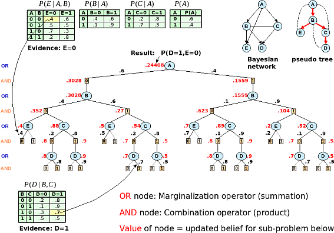

AND/OR search for graphical models
Graphical models are widely used frameworks for knowledge representation. Examples include Bayesian
networks, constraint networks, Markov random fields and influence diagrams. They all use graphs to
capture conditional independencies between variables. The independencies allow both a concise representation,
and efficient graph-based algorithms for query processing.
AND/OR search is conditioning algorithm that exploits the structure of the graphical model. Its execution is
guided by a pseudo tree that spans the graph, capturing the decomposition into independent components.
The AND/OR tree can be exponentially smaller than the standard backtrack tree, being exponential in the
depth of the pseudo tree, rather than the number of variables. When memory is available, the results of the computation
in some subtrees can be cached (indexed by the context, or current partial assignment) and reused. The resulting
AND/OR graph is exponential in the treewidth of the graph, rather than pathwidth.
|

|
|
Computing P(D=1,E=0) by AND/OR tree search
|
The figure shows a small Bayesian network, with evidence D=1 and E=0. The task is to compute
the probability of evidence, which amounts to marginalizing out all the variables, in essence executing a SUM-PRODUCT
algorithm. The AND/OR tree search performs a depth-first traversal, accumulating the result at the root.
Further reading:
-
Rina Dechter and Robert Mateescu,
AND/OR Search Spaces for Graphical Models
In Artificial Intelligence Journal, Vol. 171, No. 2-3, pages 73-106, 2007.
-
Robert Mateescu and Rina Dechter,
The Relationship Between AND/OR Search Spaces and Variable Elimination
In proceedings of The Twenty First Conference on Uncertainty in Artificial Intelligence, UAI-05, Edinburgh, Scotland, July 2005.
-
Rina Dechter and Robert Mateescu,
The Impact of AND/OR Search Spaces on Constraint Satisfaction and Counting
In proceedings of The Tenth International Conference on Principles and Practice of Constraint Programming, CP-04, Toronto, Canada, September 2004.